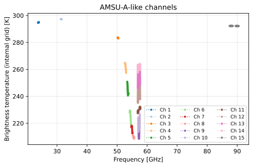
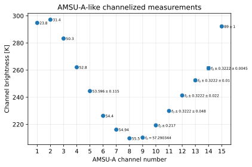

Satellite sensors
"""
Build an AMSU-A-like microwave sensor from a simple channel sheet.
This is an example of how to set up simulations for a custom sensor.
"""
from dataclasses import dataclass
import os
import matplotlib.pyplot as plt
import numpy as np
import pyarts3 as pa
@dataclass(frozen=True)
class ChannelSpec:
""" A simple data structure to hold the channel specifications. """
number: int
spec_text: str
reference_hz: float
bandwidth_hz: float
polarization: str
nedt_k: float
lo_offsets_hz: tuple[float, ...] = ()
# fmt: off
CHANNELS = [
ChannelSpec(1, "$23.8$", 23.8e9, 270e6, "Iv", 0.30),
ChannelSpec(2, "$31.4$", 31.4e9, 180e6, "Iv", 0.30),
ChannelSpec(3, "$50.3$", 50.3e9, 180e6, "Iv", 0.40),
ChannelSpec(4, "$52.8$", 52.8e9, 400e6, "Iv", 0.25),
ChannelSpec(5, "$53.596 \\pm 0.115$", 53.596e9, 170e6, "Ih", 0.25, (115e6,)),
ChannelSpec(6, "$54.4$", 54.4e9, 400e6, "Ih", 0.25),
ChannelSpec(7, "$54.94$", 54.94e9, 400e6, "Iv", 0.25),
ChannelSpec(8, "$55.5$", 55.5e9, 330e6, "Ih", 0.25),
ChannelSpec(9, "$f_0 = 57.290344$", 57.290344e9, 330e6, "Ih", 0.25),
ChannelSpec(10, "$f_0 \\pm 0.217$", 57.290344e9, 78e6, "Ih", 0.40, (217e6,)),
ChannelSpec(11, "$f_0 \\pm 0.3222 \\pm 0.048$", 57.290344e9, 6e6, "Ih", 0.40, (322.2e6, 48e6)),
ChannelSpec(12, "$f_0 \\pm 0.3222 \\pm 0.022$", 57.290344e9, 16e6, "Ih", 0.60, (322.2e6, 22e6)),
ChannelSpec(13, "$f_0 \\pm 0.3222 \\pm 0.01$", 57.290344e9, 8e6, "Ih", 0.80, (322.2e6, 10e6)),
ChannelSpec(14, "$f_0 \\pm 0.3222 \\pm 0.0045$", 57.290344e9, 3e6, "Ih", 1.20, (322.2e6, 4.5e6)),
ChannelSpec(15, "$89 \\pm 1$", 89e9, 1000e6, "Iv", 0.50, (1000e6,)),
]
CHANNEL_COUNT = len(CHANNELS)
SAMPLES_PER_CHANNEL = 11
POS = [817e3, 0.0, 0.0]
LOS = [130.0, 0.0]
ELL = pa.arts.planets.Earth.ellipsoid
# fmt: on
def sensor_channels(channels, n):
""" Helper to turn the table above into channel responses """
out = []
for ch in channels:
# The range is [f_ref, 0], [f_ref, inf]
x = pa.arts.sensor.HeterodyneFrequencyRange(ch.reference_hz, [0, np.inf])
# Zero or more mixes, which add more ranges follow.
for lo in ch.lo_offsets_hz:
x.mix(lo)
# The channel response is a simple boxcar with the specified bandwidth.
m = pa.arts.sensor.BoxChannel(0, ch.bandwidth_hz / 2, n)
v = x.channel_response(m)
out.append(v)
return out
def extract_channels(spectral_rad, measurement_sensor):
""" Helper to extract internal simulation grid for channels """
out = []
for ch in measurement_sensor:
v = np.where(ch.weight_matrix.dense.flatten())[0]
out.append([np.array([ch.f_grid[i//4] for i in v]), spectral_rad.flatten()[v]])
return out
# %% Download data and set up workspace
ws = pa.Workspace()
pa.data.download()
# %% Use built-in spectroscopic data.
ws.abs_speciesSet(species=["O2-PWR98", "H2O-PWR98"])
ws.ReadCatalogData()
ws.spectral_propmat_agendaAuto()
# %% Set up a simple atmosphere and surface.
ws.surf_fieldPlanet(option="Earth")
ws.surf_field[pa.arts.SurfaceKey("t")] = 300.0
ws.atm_fieldRead(toa=100e3, basename="planets/Earth/afgl/tropical/", missing_is_zero=1)
# %% Use a geometric path.
ws.ray_path_observer_agendaSetGeometric()
# %% Simple sensor setup: position, line-of-sight, polarization, and channels.
sensor = pa.arts.sensor.Builder(channels=sensor_channels(CHANNELS, SAMPLES_PER_CHANNEL))
ws.measurement_sensor, ws.measurement_sensor_meta = sensor(POS, LOS, ELL)
for i in range(len(ws.measurement_sensor)):
ws.measurement_sensor[i].normalize(CHANNELS[i].polarization)
# %% Collect on a single grid to help plotting and speed-up calculations - this sacrifices Jacobian flexibilities
ws.measurement_sensor.collect()
# %% Compute the sensor response in Planck units
ws.spectral_rad_transform_operatorSet(option="Tb")
ws.measurement_vecFromSensor(kernel="High Performance")
# %% Compute the internal frequency grid response for plotting
ws.freq_grid = ws.measurement_sensor[0].f_grid
ws.spectral_rad_observer_agendaExecute(obs_pos=POS, obs_los=LOS)
ws.spectral_radApplyUnitFromSpectralRadiance()
# %% Plotting
ch = extract_channels(ws.spectral_rad, ws.measurement_sensor)
colors = plt.get_cmap('tab20')(range(CHANNEL_COUNT))
fig_internal, ax_internal = plt.subplots(figsize=(6, 4))
for i in range(CHANNEL_COUNT):
ax_internal.plot(ch[i][0]/1e9,
ch[i][1],
"o:",
markersize=2.5,
linewidth=1.1,
label=f"Ch {CHANNELS[i].number}",
color=colors[i],
)
ax_internal.set_xlabel("Frequency [GHz]")
ax_internal.set_ylabel("Brightness temperature (internal grid) [K]")
ax_internal.set_title("AMSU-A-like channels")
ax_internal.grid(True, alpha=0.3)
ax_internal.legend(ncol=3, fontsize=8)
fig_channels, ax_channels = plt.subplots(figsize=(6, 4))
ax_channels.errorbar(
[spec.number for spec in CHANNELS],
ws.measurement_vec,
yerr=[spec.nedt_k for spec in CHANNELS],
fmt="o",
capsize=3,
linewidth=1.0,
)
ax_channels.set_xticks([spec.number for spec in CHANNELS])
ax_channels.set_xlabel("AMSU-A channel number")
ax_channels.set_ylabel("Channel brightness [K]")
ax_channels.set_title("AMSU-A-like channelized measurements")
ax_channels.grid(True, alpha=0.3)
for x, spec, y in zip([spec.number for spec in CHANNELS], CHANNELS, ws.measurement_vec):
ax_channels.annotate(
spec.spec_text,
(x, y),
textcoords="offset points",
xytext=(4, -2.5),
ha="left",
fontsize=6,
)
fig_internal.tight_layout()
fig_channels.tight_layout()
if "ARTS_HEADLESS" not in os.environ:
plt.show()
ref = [294.82020426974526, 297.1947623380882, 283.302312755353, 262.0990916297846, 244.54610199393989, 226.31688048929024, 216.13528849096693,
209.71768967552475, 210.24931675027358, 219.3006268679223, 229.9146206010939, 241.32757369987274, 252.48941437009185, 261.41619227415606, 292.22500426558753]
assert np.allclose(ws.measurement_vec, ref), \
f"Mismatch to reference simulations.\nReference: {ref}\nSimulations: {ws.measurement_vec:B,}"

{kind=link}

{kind=link}